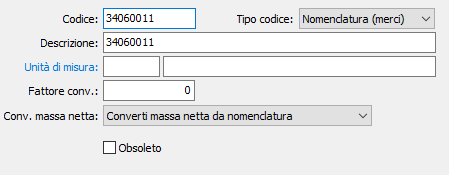

Nomenclature combinate
La tabella, che può essere gestita dagli utenti che utilizzano la procedura Gestione modelli Intra, consente di memorizzare le nomenclature combinate doganali relative ai prodotti trattati. Gli appropriati codici di questa tabella vengono inseriti nell'anagrafica articoli per consentirne il corretto trattamento nei modelli Intra. Si tratta di una tabella facoltativa la cui creazione può essere omessa se non ricorrono le condizioni indicate.

CODICE: codice alfanumerico di 8 caratteri per individuare la tipologia dei prodotti. Si consiglia di utilizzare il codice doganale di nomenclatura combinata relativa alla tipologia del prodotto. Sul campo sono attive funzioni di ricerca (F9) sulla tabella stessa.
TIPO CODICE: definisce se si tratta di nomenclatura, in caso di merci, o servizio, in caso di prestazioni.
DESCRIZIONE: campo alfanumerico di 50 caratteri per descrivere la voce doganale.
UNITÀ DI MISURA: codice alfanumerico di 3 caratteri, presente in tabella Unità di misura, che identifica l'unità di misura prevista dalla nomenclatura combinata per la voce doganale in esame. Sul campo sono attive le funzioni di ricerca (F9) sulla tabella Unità di misura.
FATTORE DI CONVERSIONE: campo numerico contenente il fattore di conversione tra l'unità di misura degli articoli e l'unità di misura prevista dalla voce doganale.
CONVERSIONE MASSA NETTA: Indica il metodo di conversione da utilizzare per il calcolo della massa netta in unità di misura supplementare:
Converti massa netta da nomenclatura: applica il fattore di conversione presente sulla nomenclatura combinata alla massa netta calcolata.
Converti quantità documento da nomenclatura: applica il fattore di conversione presente sulla nomenclatura combinata alla quantità del documento.
Converti massa netta da prodotto: applica il fattore di conversione associato al prodotto, o al rigo del documento, alla massa netta calcolata.
Converti massa netta da prodotto: applica il fattore di conversione associato al prodotto, o al rigo del documento, alla quantità del documento.
OBSOLETO: flag attivabile dall’utente per inibire il possibile utilizzo dell’elemento di tabella in esame nelle successive transazioni.